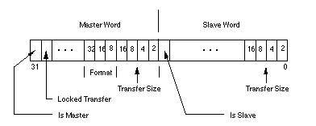
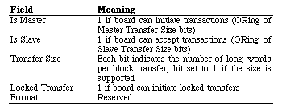

|
|
This Technical Note describes the sResource entries needed in a
declaration ROM to inform NuBus masters when a board
is capable of receiving or sending block transfers.
[Feb 01 1991]
|
Introduction
In addition to normal long word transfers, the NuBus specification defines a
number of block transfer transactions. In block mode transfers, the system
arbitrates for the bus a single time and then performs a group of consecutive
long word transfers before releasing the bus. The reduction in bus arbitration
time can result in considerable gains in performance.
Currently, Macintoshes do not support block transfers to or from NuBus cards;
however, in the future, this might change. In addition, present NuBus cards
can act as bus masters and initiate card-to-card block transfers (e.g., 8*24 GC
Card to 8*24 Display Card). The problem is that the master needs to determine
what block transfer capabilities a slave has (and future systems may want to
ascertain the same). This Note describes the mechanism that is to be used for
NuBus cards to register their block transfer capability.
This Note uses video boards as an example, but hardware developers should note
that the same principle applies to other types of NuBus boards (e.g., memory
expansion, data acquisition, etc.). Apple recommends reviewing the NuBus
specification to clarify details about master transfers, locked transfers, and
block transfer sizes.
Back to top
Give Or Take?
There are two long word sResource entries which define the block
transfer capabilities of the board or mode. The first describes general
block transfer information and the second describes the maximum number
of transactions for locked transfers (if the board supports them). If the
entries specifying block transfer information are omitted, the master should
assume that the target board does not support block transfers and should not
test for this capability when the entries are not present. It is highly
encouraged that new boards being developed do include this information since
future system software will most probably only use these entries to decide if a
board supports block transfers or not since any method of directly testing the
board to identify its capability is liable to cause data loss or weird
behavior, including system crashes.
The second word is not necessary if the board or mode does not support locked
transfers.
The NuBus specifications establish that when a slave board that does not
support block transfers receives such a request, it should terminate the first
transfer with /ACK; boards that do not support block transfers and do
not implement an early /ACK block termination must have the
sResource block transfer information present with all the slave
transfer size bits set to zero.
The format of the general block transfer information is a long word whose
structure is as follows:

Figure 1-General Block Transfer Information Long Word Format
The fields have the following meaning:

Table 1 - Descriptions Of General Block Information Fields
The Maximum Locked Transfer Count is a long word.
Figure 2 - Maximum Number Of Transactions Long Word Format
Back to top
How Do You Define Them; Where Do They Go?
The block transfer capability long words are kept in a card's declaration ROM.
You can use OSLstEntry (OffSet List Entry) macros to describe both
block transfer capability long words. The macro takes two arguments: the ID
byte and a label designating the destination and uses them to create a long
word entry. The macro puts the first argument, the ID, as is, into the high
byte, and, with the second argument, calculates the 24-bit signed offset value
to the destination label, putting it into the next three bytes.
If the card can support all block transfers in all of the
operation modes that it supports, the block transfer capability entries are
kept in one centralized place--the board sResource list. For example,
this is the way it is done on the Apple 8*24 GC Display Card. When the board
sResource is used to store the entries, use these ID values for the
general block transfer information and maximum locked transfer count long
words:
sBlockTransferInfo = #20 = $14
sMaxLockedTransferCount = #21 = $15
The following code fragment illustrates a board sResource case
implementation:
_sRsrc_Board
OSLstEntry sRsrc_Type,_BoardType
OSLstEntry sRsrc_Name,_BoardName
OSLstEntry sBlockTransferInfo,_BTInfo
OSLstEntry sMaxBlockTransferCount,_BTMaxCnt
DatLstEntry BoardId,BoardId
OSLstEntry PrimaryInit,_sPInitRec
OSLstEntry VendorInfo,_VendorInfo
OSLstEntry SecondaryInit,_sSInitRec
OSLstEntry sRsrcVidNames,_sVidNameDir
DatLstEntry EndOfList,0
. . .
_BTInfo
DC.L allBlockTransfers
_BTMaxCnt
DC.L maxLockedTransferCount
|
where, for example, allBlockTransfers = $C00F800F and
maxLockedTransferCount = maximum transaction size. It is important to
note that this value depends on the capabilities of the board under
consideration as indicated in the illustrations.
If the card only supports block transfer in some modes (specifically, screen
depths in the case of video boards), the information is placed in the
sResource entries corresponding to those modes (e.g., video
sResource parameter lists) that support block transfers. This is the
way it is done on the Apple 8*24 Display Card, since it does not support block
transfers in the 24-bpp mode or any convoluted interlaced mode.
The Apple sResource ID numbers for this case are:
mBlockTransferInfo = #5 = $5
mMaxLockedTransferCount = #6 = $6
The following code fragment illustrates one video parameter list within one
sResource:
_EZ4u
OSLstEntry mVidParams,_Parms
DatLstEntry mPageCnt,Pages
DatLstEntry mDevType,ClutType
OSLstEntry mBlockTransferInfo,_BTInfo
DatLstEntry EndOfList,0
. . .
_BTInfo
DC.L allSlaveBlockSizes
|
where allSlaveBlockSizes = $0000800F. Note that the maximum block
transfer count does not need to be specified for slave devices, and for this
reason it is not used in the example.
Back to top
Conclusion
Cards that support block transfers must use these sResource entries in
their declaration ROMs to allow other NuBus boards to utilize this capability
thus improving compatibility and performance.
Back to top
References
Designing Cards and Drivers for the Macintosh Family, Second Edition
IEEE Standard for a Simple 32-Bit Backplane Bus: NuBus
NuBus is a trademark of Texas Instruments
Back to top
Downloadables
|

|
Acrobat version of this Note (140K)
|
Download
|
Back to top
|